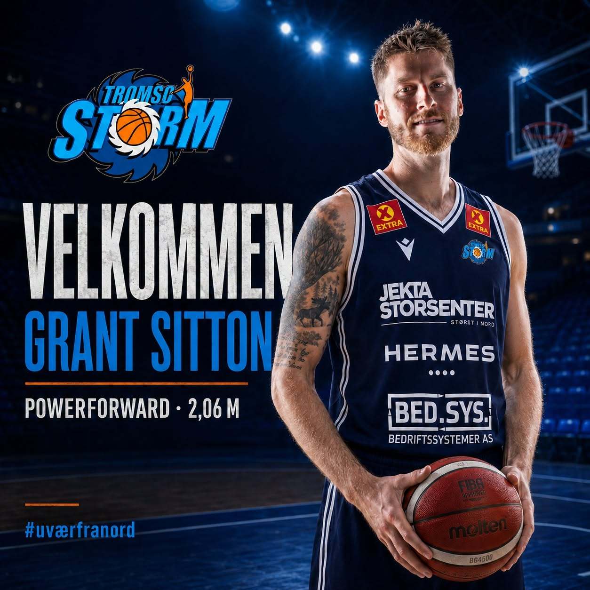
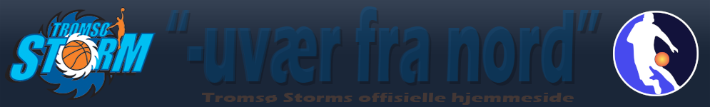
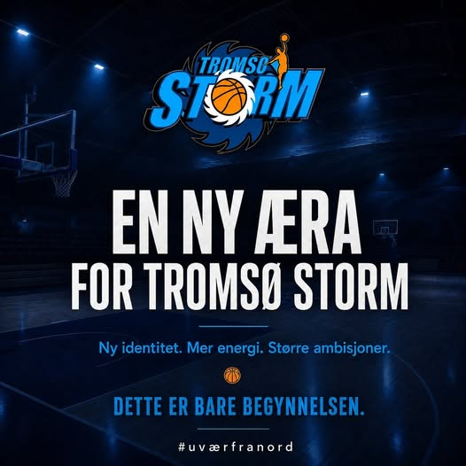
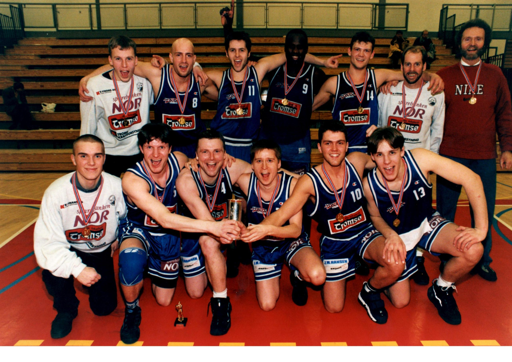

UVÆRFRA NORD
Konsept 01
Arena
Mørk, kraftfull og kampdrevet. Store bilder, høy puls og tydelig billettfokus.
Se Arena →
Ny hjemmeside · designrunde 1Alle konseptene er ungdommelige, mobiltilpassede og laget for å kunne bygges som et moderne WordPress-tema.

UVÆRMørk, kraftfull og kampdrevet. Store bilder, høy puls og tydelig billettfokus.
Se Arena →
STORMUng, rask og digital. Modulbasert nyhetsfeed med energi fra sosiale medier.
Se Pulse →
SIDENValgt design kan bygges som et moderne blokktema. Ørjan beholder arbeidsflyten han kjenner, mens gamle artikler, bilder, klubbaviser og arkiv migreres i stedet for å gå tapt.